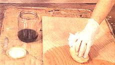
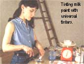
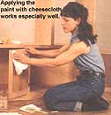
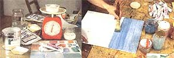
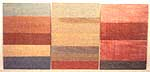
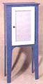
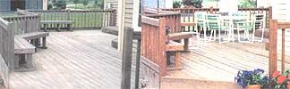

COUNTRY SKILLS
Mother's painter Gail Larroca applies tinted shellac to an alder wood cabinet door.
Safe and envinronment-friendly paints, stains, and strippers.
In the early 1970s a young couple I know purchased a new kind of tool for removing the layer-on-layer of paint covering the woodwork of the old farm home they were restoring for their growing family. The gadget was an electric heat gun-a kind of souped-up hair dryer that softened and loosened the old paint so a putty knife could scoop it off like butter. The gun didn't set the paint alight or scorch the wood like a blowtorch, or create the sloppy mess of lye or the noxious odors of petrochemical strippers. And we all thought it was in perfect keeping with our newfound environmental consciousness.
But then their youngest son developed a persistent digestive upset that puzzled doctors till an old-time GP diagnosed it as "painters' colic." This is chronic, low-level lead poisoning once common among fine-art painters who shaped their brushes with lips and tongue, and unwittingly ingested toxic "red leads" and "white leads"-carbonates and oxides of lead that have been a major component in paints, putties, and topical ointments for centuries.
It took a while to isolate the source of the problem, but my friends finally (and broken-heartedly) had to conclude that they'd all been absorbing lead volatilized by the heat gun into a breathable aerosol that eventually settled on food, furniture, and playthings. Only the baby was small enough to present severe symptoms.
With medication and an end to heat-gun paint stripping, the boy recovered physically, but developed a mild learning disability that may or may not be a consequence of lead exposure. There is no way to know for sure.
There was less doubt about the cause of truly severe lead poisoning just then turning up among children from inner-city slums and rural centers of poverty. Far too many (underprivileged, often neglected) kids were absorbing disabling amounts of lead from paint chipped off woodwork inside and outside their old homes (as well as from tetraethyl lead in gasoline). The federal government moved quickly to eliminate lead from fuel and from paint products for use on, in, and around the home, and in public areas, as well as in glazes on cooking utensils and tableware, and finishes on toys and furniture.
Today, ever more local authorities are requiring lead paint in older homes to be covered overall, and to be stripped to bare wood to well above kid-level (inside and out) before the dwellings can be sold or rented to families with small children. Also, clean air-and-water and public health legislation is removing toxic and environmentally harmful complex-hydrocarbon-based solvents from paint and paint- and adhesive-removal products sold for consumer use. These solvents-once common in varnishes and enamels-include: toluene (tolulol), a component of tri-nitro-toluol (TNT); the carcinogen benzine that was used to make DDT; even the (once)-universal organic solvent acetone that is the feedstock for smokeless gunpowder. Needed by industry and professional painters, perhaps, but not the kind of stuff to be sitting on the paint shelf out in your garage or mine.
To their credit, today's paint industry inherited its problems from earlier generations, and has been more than cooperative with regulators in making their products safe as reasonably possible for consumer use. But many common products remain environmental hazards, and a few still pose danger to human health.
But, how to judge? Finishings chemistry is technical, making it difficult for most of us to shop knowledgeably for paints, putty, stains, and paint removers. Would you know the difference between (the common solvents) alcohol, ethanol, and methanol? Neither would I, offhand. They are three names for the same thing. Ethanol is common grain alcohol, the solvent used in shellac or "spirit varnish." It is usually laced with methanol ("wood alcohol" that was originally brewed from wood fiber). Methanol is poison-rendering the mix of alcohols "denatured," or unconsumable and indivisible-thus untaxable as distilled spirits.
Furthermore, paint making is shrouded in secrecy, harking back to medieval alchemists and their potions concocted from ordinary compounds and given arcane names: brimstone (sulfur), saltpetre or nitre (ordinary potassium nitrate used for centuries to make comed beef) as well as eye of newt and wing of bat. Further, paint makers are not required to list ingredients on paint or stain containers, and most of us are so ignorant of paint's mysteries that we have to buy whatever the hardware store clerk recommends.
In truth, there's nothing mysterious about conventional paint. It contains a fluid medium or solvent to flow it on, a white filler to give it body, and a white color base-plus a binder to provide smooth consistency and adhesion, and colored pigment. Its purpose beyond ornamentation is to bond with wood or other material to provide protection from corrosion on metal, and from water and ultraviolet sun rays on anything left outdoors. It's also meant to reduce the atmospheric-moisture retention/evaporation that combines with heat variation to cause continual joint destroying movement in wood.
Stains are even simpler. They provide both protection and ornamental enhancement to wood, and can be pure solvent such as Tung oil; a solvent/stain mix such as walnut oil; a mixture of solvent and natural pigment such as an earth color; or a synthesized pigment such as aniline dye.
For centuries red and white leads were mixed into paints because they are cheap, highly stable filler/binders-extremely fine powders that mix well with oil-soluble dyes, stay suspended in a linseed oil medium for extended periods, flow on smoothly, and adhere well to porous surfaces. They just happen to be toxic-but maybe in earlier times little kids weren't left alone to teethe on flaking window sills.
Dirt-common (literally) painter's lime or pipe clay are also finely milled powders that make almost as good a base pigment/filler as white lead. These benign natural earths will mix with water and absorb water-soluble pigments, but need starch or another cohesive binder to keep them from settling quickly, allow them to be applied smoothly, and make them stick. However, they are harder to mix and keep mixed and don't flow as smoothly. The organic binders in the paint (unlike waxy, toxic metallic lead salts) attract mold, and the finish will dry out and chip relatively quickly.
In the old days, the cheapest finish around was a white paint homemade from lime and water. It was called whitewash-the stuff that Tom Sawyer used to get this famous fence painted. Rain washed it off easily, so it needed to be reapplied every year or two.
Whitewash was used to brighten up and sanitize interiors-more in barns, workshops, and factories than inside homes (where it would flake and get all over everything). Augmented sometimes with an adhesive binder such as wheat paste, it was just sloshed on, one coat over another, year after year, with a wide, thick paperhanger-type glue brush or a mop.
The walls and ceiling of the milking parlor in my old barn were whitewashed, but have not had a fresh coat in decades. The big flakes that slough off the bottom of the loft floorboards and old half round log ceiling beams are a good quarter-inch thick from all the built-up layers.
Water is the solvent and brush cleaner in oldtime, pretech. whitewash, and most modem, hitech house paints. But, in the heyday of "interim tech" that brought us lead paint, chemists were refining evermore sophisticated mineral solvents from coal, tar and petroleum, and using them to make finishing products as well as brush cleaners and paint strippers needed to dissolve the products. In traditional paint-biz secrecy, ingredients in all these products were concealed from consumers, and many were (and are) hideously hazardous to both people and the environment.
Government regulators now require that contents of strippers be revealed on the container-but how many consumers know the difference between methylene chloride (fumes are virulently toxic) and N-methyl-pyrrolidone di-basic ester (sounds much more toxic, but is reasonably safe to use due to slow evaporation)?
Only one common stripper lacks chemicals and volatiles that can be harmful to you and damage air quality. This safest and most effective universal paint stripper is also the oldest: a solution of common lye and water. Lye, or caustic soda, is the strongly alkaline compound used to make soap from animal fats. It consists of sodium hydroxide-Drano drain cleaner you can buy in hardware stores and the grocery, or Potash (potassium carbonate) that you can make yourself by steeping wood ashes, draining off the water, and letting it evaporate outdoors (but up high and screened so it doesn't attract thirsty mice to an unpleasant demise).
Nothing but a saturated solution of common lye and water is what most commercial stripping tanks contain (ever wonder why there is no chemical odor in stripping sheds?). Lye takes more time to perform than petro-solvent-based counterparts, and it requires constant monitoring. Lye will dissolve old animal protein-based hide-or-hoof furniture glues, and if wood is left in the caustic brew too long, the grain will raise and the surface can be ruined. It is especially to be avoided in refinishing veneers and inlays.
Lye, in either its solid crystalline form or in solution is a lethal poison that can burn. your skin (it takes a little time to act, so a quick wash-off will prevent a serious burn). But just a tiny spatter can permanently damage eyes before you get to a water faucet to rinse it out. So, unventilated side-guard-equipped safety glasses are mandatory, and long rubber gloves and sturdy, long-sleeve outerwear are strongly advised.
Be sure you pour crystalline lye into water-not the other way around, lest you cause it to erupt and spatter all over you. If you have small children around the place, use all the lye you buy make. Don't ever keep a half-used container around the house-even on a high shelf.
On the positive side, lye is an honest, straight-forward caustic agent. It warns you of danger-by stinging. Further, its action is good old-fashioned inorganic chemistry, incorporating no complex hydrocarbons that can exert a subtle, lingering effect on human health or on air or water quality. The soapy, stripped-paint/lye residue must be disposed of properly (especially if the paint contains lead-which makes it toxic waste). But lye itself is neutralized almost instantly on contact with natural acids in the soil or ground water (not that you should pour used stripping solution-or any paint or solvent-out in the backyard, down the drain, into the sewer, or in your septic tank).
One technique is to make a saturated solution and paint it on, keeping the surface constantly wet till the old paint releases. Or, you can purchase lye water mixed with an inert (silica) gel, so it goes on thick and stays moist by itself.
Old paint and stripper are scraped off, and what's left of the solution and paint residue is neutralized with boric acid or vinegar and water. The scrapings are stashed in a corner of the shop to evaporate. Then, the sloppy residue is bagged in plastic (it will eat holes in most anything else-especially aluminum cans), tagged, and taken to the toxic-waste holding shed at your dump or transfer station, whence it will be hauled to a licensed toxic-waste facility.
The most ultramodern, hi-tech paints are concocted using sophisticated polymer chemistry. Polymer is a techno-intimidating word, but is just a chemist's term for plastic. Synthesized plastics have been around since Bakelite was invented in 1903.
But natural plastics have been used to make varnishes a lot longer. The natural protein, casein, in milk (concentrated when the curds of cottage cheese are separated from whey), is a polymer used as a binder in old-fashioned milk paint. The polymer in ordinary shellac is lac, a transparent, yellow resin that's exuded by an insect. Common pine tree sap consists of turpentine and rosin, a naturally hard resin once used to make varnish.
Chemically, polymers consists of long chains of simple compounds (monomers) that slide past one another to varying degrees, making the plastic ...well, plastic so it will mold into any shape and retain its resiliency. In paint, the polymer serves as a binder to which fillers and pigments are added. For example, to mix modern house paint, white chalk or another benign filler plus pigments are added to a liquid resin. Originally the polymer used was latex-rubber-largely replaced by synthetics these days, but originally made from the milky sap of tropical American trees.
Whether the polymer/binder is natural or synthetic, the medium/solvent in "rubber paint" is ordinary water, which evaporates harmlessly, leaving a thin sheet of paint that won't chip easily, and won't harm any little kids if it does. It will also conform to any shape and stick as tenaciously as chewing gum-which happens to be made from another natural polymer: chicle, the original chewing gum that comes from the milky sap of another tropical American tree.
The industry continues to reduce individual and environmental hazard; however, in our complex economy, not all paint products can or need be made safe for routine home/amateur use. Artists want and deserve colors that will last for eons, and metallic salts in slow-drying solvents make the most stable pigments. Some can still cause painter's colic, but the danger is common knowledge in schools and artistic circles. Nobody mouths a paint brush anymore. Automotive paints and other industrial finishes still contain components that may be hazardous before or during use, but are perfectly safe to people and the environment if applied as specified-by suitably protected workers in air-recirculating enclosures that capture volatiles for recycling-then allowed to cure under controlled conditions. For example, some industrial paint (such as the red enamel applied to Troy-Bilt tillers) is electrically charged so it sticks like a magnet to oppositely charged metal parts, avoiding a wasteful, potentially airpolluting overspray and creating a tougher finish.
Hi-tech polymer finishes such as DuPont's Imron, which is applied to aircraft and classic autos, U.S. Paint's Awl-Grip yacht finish, or DETCO's Sterling linear polyurethane used on boats, outdoor furniture, and buildings, are created by onsite mixing of separate components similar to the resin/hardener mix used in the fabrication of fiberglass or epoxy glues. The base components of the bivalent compound may be harmfully volatile or caustic alone, but they combine to harden into a surface protectant that is benign and stable, and that encapsulates any potentially harmful pigment in an impervious plastic sheath once it is dry and cured.
Professional house painters use full-body protection and respirators when needed. But you won't need to. Modern house paints-both wall/ceiling coverings and hard enamel for woodwork-from Sears, Sherwin-Williams, Glidden, other national brands, and smaller regional paint manufacturers-are wonders of modern polymer paint chemistry.
You've seen, and most likely used, the "color centers" in hardware stores and home improvement centers where hundreds of shades of latex house paint can be mixed automatically. Exterior paint is still best applied to a carefully scraped, caulked and primed surface with good-quality brushes (by professionals with the ladders, staging and experience to do it right and safely).
But interior wall and ceiling painting is a do-it-yourself job, since modern finishes almost apply themselves with rollers, flat-foam crack-and corner applicators and disposable foam brushes. Some wall paints even incorporate an airtight moisture barrier for better heating efficiency. The modern latex replacement for white-lead/linseed oil enamel is as hard and glossy as its predecessor, but is harmless in all forms, and in drying, smells to me like a faint air freshener.
Krylon has introduced Living Colors, the first latex paint that comes in a spray can. There is no smell, and it dries in 30 minutes.
The very latest coverings are not only benign from start to finish-and emit no fumes at all, but have replaced volatile solvents with heat-producing or atmospheric water-absorption processes.
And they all go on easier and smoother, dry faster, and provide better and longer-lasting coverage than the Lo-tech old-timers or intermediate tech lead-base finishes.
But not all hazard has been eliminated. And, the ingredients in paints and stains are still not revealed on most containers.
We consumers often have a choice between environmentally-hostile and -friendly paints and stains-even if we have to work to ferret out their components. It's up to us, not industry or the government, to assure that our kids are safe and our air pure.
We shouldn't let small children play with those old tubes of oil colors that Mom dabbled with once, or have access to pressurized cans of auto touch-up paint out in Dad's shop. Old cans of putty and cylinders of caulk can contain lead, and newer formulations aren't something a child should be able to get to.
We can also do our share to encourage continued improvement in paint safety. Where you have a choice, buy paint products with a water base rather than a volatile petroleum-derived solvent. If you have the patience to put up with their quirky ways, use finishing products formulated from (often smelly, but harmless) vegetable oils: turpentine (distilled from pine sap), linseed (pressed from flax seed) or tung oil (from an Oriental nut). Choose natural stains and earth pigments over synthesized colors when you can. And, though their use may require a bit more time and elbow-grease, such old-fashioned but lo-tech coverings as lime-and-water whitewash and Colonial-era milk paints offer colors and textures that can't be found in modern coverings. As we'll see below, many of these old-time paints and stains can be cooked up in the kitchen sink from commonly available, inexpensive, and utterly harmless ingredients.
In paints, as in much else in recent decades, we've been too accepting of technologies that were brought to market before their total effect upon our fragile planet could be assessed. Consider my friends' heat-gun paint stripper and white lead-based house paints. Till they aged and began to chip, lead house paints hadn't caused widespread harm. Neither had traditional paint-removal techniques. But in combination, 200-year-old paint and a new electric stripping tool produced a potentially lethal vapor.
MOTHER has long advocated the use of appropriate technologies new or old: whatever works best and with least negative influence on the air, soil, and water. It seems that in paint products, we are safest using old-fashioned preindustrial products and the very latest 21st-century developments-selectively rejecting the overreaching, crude, and often unwittingly hazardous technologies developed during the late 19th through late-middle 20th centuries.
Following is more information on locating, choosing, mixing, and applying both old-fash ioned and the very newest in stains, paints, and strippers.
There is more to resin than a nice wood finish. It goes back in time-way back.
The slick and lovely clear-honey or milk-and-honey-toned natural plastic, amber is hardened sap from ancient pines. It was once mined in the Balkans and made into varnish, and may still be. These days, much "Baltic Amber" is polished and made into jewelry. Though it is millions of years old, the occasional piece of amber contains actual-not fossilized into stone-plant fragments and insects that became glued in it. Ever see the movie Jurassic Park? Made me wish that amber was all being made into varnish.
Fresh or fossilized aromatic incense resins, most notably copal, have been made into varnish since they were used to paint sarcogaphi in the days of the Pharaohs. Native Americans use the fragrant and slow-rising smoke of copal incense to speak with the Great Spirit. And, two other incense resins, frankincense and myrrh (Balm of Gilead) were brought to the infant Jesus by the three wise men in sandalwood boxes decorated with enamel-varnish made from copal.
For more information on dealing with lead in paint, get on the Internet and download The Lead Tester from the EPAs home page at http://www.branch.com/epa/.
The final step in preparing a wood surface for finishing is often to color it and/or to seal the grain against moisture and create a surface that will best accept finish. Drywall and ceramic basement walls too often need patching, filling, and sealing. For the most part, there is no way to know what is in most products sold for these purposes-whether they are toxic or an environmental hazard, or whether they are compatible with your preferred final finish. One notable new exception is FI:X Wood Patch from Darworth Co. (800-624-7767). It is a water-based wood filler that will sand and stain as well as any. It comes in a wide-mouthed squeeze applicator that reduces waste.
Another way to be sure is to mix your own from natural or elemental ingredients. Woodcrafters have long made fillers from glue and sawdust. White putty can be mixed from white clay and linseed oil, or clay or painters lime and Elmer's latest super-glue-Pro Bond Polyurethane Glue, which will bond most anything: glass ...stainless steel ...forever. It is a 1-part poly glue that contains no volatile solvents.
Color can be conferred with dyes or stains that penetrate the fibers of wood or fabric, or with pigments that contain finely milled particles, which lodge in the pores of the wood and are mixed with binders to keep them there.
Some oil-type (but nonpetroleum) penetrating stains occur in nature. You can get a lovely yellow-brown stain from a light, colorless, aromatic oil produced in the tough, woody husks of the butternut tree: the elongatedoval outer shell of the nuts produced by the walnut relative that's a cony mon semi-weed tree in the East. Butternut-oil dye was used to color the uniforms of the army of the Confederates in the Civil War.
The oil can be pressed from butternut husks by jury-rigging a powerful hydraulic press from a log splitter or car jack. For years, I've just collected the husks while they are still green, whacked them open and crushed them to a coarse pulp with a hand sledge on a flat (nonporous) rock. I then smear the pungent-smelling mash (quickly, before the oil evaporates) on pine or other common wood I want to color a nice brown (though my fingers get as stained as the wood).
Several coatings of the oil will go a long way toward rustproofing home-forged carbonsteel cutlery and tools, and is especially suitable for staining ax handles, scales for handles of homemade knives, leather thongs, and homespun cloth. It takes effort that's worth it if you are a pioneer-lays or Civil War reenactor or primitive-living fan, or have enough of an argument with modern technology to go that far back into the future.
Black walnut, chestnut, and buckeye husks will also produce brown oil-type stains, but they are less effective in amateur hands than butternut. A yellow penetrating-oil-type dye comes from the heart wood and the otherwise useless, hard inedible fruit of the Osage orange tree. All these aromatic oils are extremely pungent and act much like menthol or camphor to clear up nasal congestion and help with chest colds.
You can cook a powerful brown water-soluble dye-tannin-out of crushed acorns, peat moss, or hemlock bark. It can be boiled down to a rich brew, but don't do it. Repeated applications of weak stain-let each dry before the next is applied-will give more control, thus more uniform results than a rich solution. If too much water is allowed to soak in, it will raise the grain of wood. But quick application and a little sandpaper will cure that.
Juice boiled up (with vinegar) or pressed out (with an old-fashioned clothes wringer cranked down tight) from wild plant stems, roots, flowers, and fruit produce colorful water-soluble dyes that were mainstays of our Indian and pioneer forbears. Most can be used as wood stains or fabric dyes, or mixed into water-based paints. Sheep people and wool dyers have whole cookbooks of recipes for natural colors, mordant, and other dye stuffs.
My own experience is limited to colors concocted for my own pioneer/primitive reproductions of furniture, weaponry, leather work, and clothing. I've boiled up a good yellow from the stems and a rich maroon from the ripe berries of staghorn sumac. If you've ever gotten mul berry juice on a white shirt, you know that these fruit produce an indelible purple stain. So do blackberries and beets.
I've found that if you shred outer leaves of red cabbage and boil them, you get purple. If you steam the cabbage, you get red. Either goes well to dye cloth or brighten cherry wood, red cedar, or California redwood. Natural deep-yellow saffron that is used as a flavoring in Spanish food as well as a dye for monk's robes comes from the pistils of an Asian variety of crocus; you can make a weaker version from your own flowers. It takes 4,000 flowers to get an ounce of powder, but a tiny fraction of an ounce goes a very long way.
Fresh grass squeezings and vinegar makes a greenish black; steel nails left in vinegar for a week make a deep black (soak wood in it long enough and you get an ebony look-alike).
If you concentrate any of these juices by evaporating or boiling down, then mixing them with the natural latex in milkweed stems and pods, you'll have a natural rubber paint that is a woodman's tempera paint-color mixed with egg white, cooked flour paste, or calves-foot jelly (gelatin) that was an early fine art-painting medium. Milkweed paint is flexible and lasts on leather or canvas longer than brittle colors.
You can make paint, putties, and sealers by mixing natural drying oils, shellac, varnish, or a colorless cooked-wheat-paste or gelatin/water binder with any filler and a pore-filling earth pig ment (such as super-finely ground sienna, umber or another natural color that is taken from the soil, refined and sometimes roasted-say, to derive burnt umber from the lighter native pigment). Iron oxide-containing red clay makes barn red; fine-milled carbon makes black pigment. Soot from oil lamps is a petroleum product and makes a semi-penetrating black pigment when mixed with oils or petro-solvents.
Wood that's to be painted can be sealed and smoothed with chalk in a natural oil or with chalk plus a wheat paste binder in a water base. Lightly sanding between successive dry coats gives you a sanding sealer that can produce a glasslike surface. Make white, dyed, or pigmented putties by decreasing fluid ingredients. The main difference between these natural products and cony mercial versions is nature's more limited palette, less convenience-and assurance of no toxic ingredients.
Plus, natural ingredients are often more costly than mass-produced chemical counterparts.
A case in point is indigo, a blue dye originally obtained from a plant of the pea family. Cultivation of indigo was introduced to South Carolina in the 1740s (by 19-year-old Elizabeth Lucas) and it rivaled King Cotton in its day. But, in the 1950s, the essential oil of the indigo plant-called aniline-was isolated by treating indigo with potash (potassium hydroxide) leached out of wood ash. Then, in the 1950s, aniline was synthesized from benzene and quickly became the basis of a whole family of dyes. Former indigo plantations went into tobacco, and you know where that got us.
You can't buy natural indigo at reasonable cost anymore-if at all-but aniline dyes come in all colors, and are stable, long-lasting, and relatively inexpensive. Aniline dyes are also chemically the same as naturally produced by the indigo plant, except the source is artificial. And, fun as it sounds to smash a few plants and nut husks, doing it long enough to get really usable amounts of color is hard work. Most of us will be using modem dyes and stains. However, as with paints, ingredients in those little cans of wood stain are a mystery, though directions for use on the can labels are reliable. Read the label. If it says "don't shake," don't. You will introduce a billion tiny bubbles that can hold up till the finish dries. Shellac and varnish bubbles enough as it is.
Some clues: Labels reveal the solvent base by telling what to use for a thinner or for cleanup. Water is the safest solvent, but may indicate that the stain contains alkyds or esters; look for hazard warnings and follow them. Once on and dry, the color is harmless. Denatured alcohol is the least harmful nonwater solvent. Directions to use an alcohol thinner indicates a shellac-type finish or a stain for which the solvent evaporates completely, leaving only color that can be covered with any finish. Don't use shellac to cover any alcohol-based stain or filler that leaves a film on the work, or one will dissolve the other. Mineral spirits indicate a varnish base for stain or filler; look carefully for directions for applying following coats.
Also, look (hard) for VOC (volatile organic compounds) ratings-now required on labels. These are benzene, naptha, and other volatiles that can harm air quality. These are slowly being regulated out of consumer products. Fgures are given in pounds of VOC per gallon, and since the specific ingredients are not identified, are meaningless in themselves. But you can compare and choose the product with the lowest VOC number. Also, the less VO's, the more solids in the product. Solids are what you pay for-what stays on your work; the volatiles just evaporate away.
There are all manners of combinations to make finishing a one-step process. Some are really good. Choose brands that have worked for you in the past, and follow label instructions.
The lovely muted colors of much Colonial furniture come from paint that was home-mixed using primitive dyes and fillers with the protein in skim milk or in curd as a binder. Today, you can buy dry milk paint ready to stir into water, or make your own from powdered skim milk and painters lime, plus any dry or water-soluble liquid pigment you fancy. Experiment to find the mix that works best starting with 50:50 (by weight) of dry milk and lime with enough water to make a thick latex-like paint.
Add room-temperature water to get a milk paint that is thick like modem latex wall paint. Added binder quality can be had from mixing in flour paste or arrowroot. Mold-preventative fungicide additives are highly toxic, but I've heard that adding enough salt so you can taste it will keep molds from growing on milk protein, wheat paste, and other organic paint components in humid weather.
You'll have to experiment with the amount of pigment to use; mix trial batches with water, apply samples, and let them dry to get your colors right. Just be sure you mix and tint the entire finished lot of any homemade paint you'll need in one batch or you'll have variations in quality, tone, and tint. Strain the paint through cheesecloth before applying.
One warning: once on and well dried, milk paint can't be stripped off with modern petrosolvents. Only good old-fashioned caustic soda (lye) will do the job, and the paint takes its own sweet time letting go. I find that satisfying in a perverse kind of way, don't you?
Next time you forget to use dormant spray on your fruit trees, and they become infested with those horrid little scale insects that hide under protective wax scales, go out and scrape them all off. Collect the scrapings, mix well in warm denatured alcohol, strain, let settle, and pour off the top layer and you'll have shellac. It takes about a half million bugs to make a quart of shellac ("lac" is a mathematical term meaning "over 100,000"), so you may want to leave the scale-bug-picking to the South. East Asians who raise the loathsome critters, and who must really need the money.
I'm not kidding here, folks. The lac bug makes honey-colored scales that are collected, dissolved in alcohol (or more recently, in acetone), refined, and used as one of the finest furniture finishes ever. Lac is a naturally flexible resin that is refined into a clear polymer that ranges in color from the nearly clear, highest grade (white shellac) to "button lac" that is almost as dark because it comes from the bug. You can buy it ready to use, but the mixed product has a short shelf life. Better is to buy flakes and denatured alcohol and mix your own as you need it.
Shellac/solvent ratios are called "poundcuts," indicating the number of pounds of shellac flakes that are dissolved in a gallon of solvent. The lower the cut, the lighter the shade and thinner the coat.
The basic premix for sale is a "3-pound cut." If you make your own, start with a "2-pound cut": 1/4-pound well-crushed flakes to a pint of alcohol, mixed in a quart glass jar so you can see it. Stir frequently over several hours till dissolved. You can warm it on a hot plate or in hot water to speed the process, but avoid open flame; alco hol is flammable. Strain through cheesecloth. If you have the time, let sit for a couple of weeks and pour clear varnish off the milky cloud of wax at the bottom. Otherwise, plan to wipe with pure solvent after each coat dries to remove wax. For the first coat at least, thin to a "1-pound cut," doubling the volume with pure alcohol if starting with a "2-pound cut," tripling if using a bought "3-pound cut."
The more thin coats you apply (buffing and/or dew axing between coats), the finer the end finish will be.
For interior use only, shellac can be sprayed, brushed, or wiped on (see "Applying a Varnish Finish," below). Shellac keeps water vapor out of wood-reducing swelling/ shrinking that causes joint-breaking wood movement. Curiously, it will not resist fluid water. Remember when you were a kid-always getting your wrist swatted for the whitish ring your moist Coke bottle left on your Mom's end tables? Called "blush," such a ring will usually disappear by itself as the shellac dries. If it persists, the blush can be removed with a little wax or at worst, an easy refinish.
However, alcohol will dissolve shellac even after it is dry. If you were lacing your Coke with Jim Beam filched from the old man's hooch locker, and spilled some on the shellac, the bare wood would have betrayed you to a woodworking elder, and you'd have gotten more than your wrist swatted. Or, that's what happened to me.
Technically, all resin-and-solvent mixes are varnishes; shellac is a spirit varnish-it uses distilled spirits as a solvent; spar varnish uses a drying-type vegetable oil as a solvent; enamel is a varnish containing pigments; lacquer is a demanding finish that uses a binder made from the natural polymer cellulose derived from wood (it lets tree limbs bend in the wind) or cotton.
In common usage today, "varnish" means a mix of drying oil and a natural or artificial resin that is cooked (often with an inert-metal cata lyst) to make a clear finish. It may use a sol vent that is a little more noxious than shellac's, but the fnal coat is usually waterproof and/or tough and long-lasting. For cen turies, varnish has been made from resins collected from tree saps and dissolved in vegetable oil such as linseed oil (extracted from flax seed), and thinned with turpentine-a volatile, fluid oleo resin steam-distilled from heart wood of pine trees (leaving solid rosin, that makes good varnish when mixed with a drying oil).
If you want to spend the time, you can slash the bark of conifers in the spring and collect the sap as it oozes out and dries in soft, sticky blobs. Dissolved in warm turpentine, strained like Lac bug scales, cooked with lin seed oil and applied in thin coats, it makes an inferior but us able clear varnish. In home-mixed varnishes fillers and putty, always use boiled linseed oil; the raw variety is sold, but will never dry.
Today, synthetic resins derived from coal tar and petroleum are replacing insect secretions and tree saps as binders, and petroleum distillates are replacing vegetable oils as solvents. Not all of them pose a serious hazard to air quality or human health.
Some traditional varnishes combine natural and artificial ingredients. One such, spar varnish, is waterproof and was originated for use on "bright work," the natural wood-colored parts of boats that are exposed to ravages of saltwater and continual sunlight. Conventional mixes will protect the wood and retain their clarity and gloss for a year before becoming chalky. More modern varnishes containing ultraviolet barriers and a more sophisticated mix of ingredients will last up to three years. And finishes containing resins with such newly familiar names as polyurethane, epoxy/amine, and phenolitic constitute a whole new class of finishing products that promise to last for many years. The chemistry behind these technical-sounding names is complicated. But the end product is nothing but a more durable sheetplastic formed in place-just like when you dissolve hardened tree sap in a drying oil, spread it on a flat surface, and let it dry.
Some examples, Interlux's Schooner combines phenolic resin and tung oil, and their Clipper is a longer-lasting one-part polyurethane; both contain UV protection. Detco's Crystal Varnish is another UV-protected tung oil and phenolic-resin mix, while their Sterling linear polyurethane coatings are two-part colored finishes that are demanding to mix and apply, but will last for many years.
The phenolic (phenolitic) resins used in advanced paints and varnishes are derived from the carcinogen benzene plus phenol-a tech term for carbolic acid, which will eat the enamel off your teeth. Thankfully, the components are rendered harmless when mixed into a 1-part finish in the plant.
You can find a limited number of clear polyurethane finishes with water as a base. They are surely the future-they're hard and won't yellow as quickly as most varnishes, and the nonflammable solvent is nearly odorless. Today's water-base poly finishes are vulnerable to water damage however, so are suitable only for interior use. Fifty-year established West Coast manufacturer WOOD-KOTE makes Cascade-Poly-Kote that is worth investigating.
Two-part finishes are fluid versions of the familiar epoxy/amine-resin "5-minute Epoxy" adhesive or the resins used to encapsulate fiberglass in boats, bathtubs, and auto bodies. The two components are mixed on the job from a resin and a hardener that combine into a stable solid. The volatiles released are harmless enough that no warning is given on the containers (it smells like vinegar-dilute acetic acid, chemically: CH3COOH and is used industrially to make plastics and rubber). The cured epoxy is totally inert, and the process of making it releases only vinegar and heat into the environment. The process combines two (or more) possibly toxic precursors to produce benign endproducts that are true wonders of modern chemistry, able to outlast their lo-tech and intermediate-tech predecessors by many times.
For now, though I think picking and choosing to find the paint technologies most appropriate for my needs. I'll stick to lo-tech natural ingredients to make my own stains, putties, and sealers, shellac, varnish, and paint for old-time woodworking projects. For elegant furniture made from fine woods, I'll rely on modern namebrand penetrating oils and varnishes made with ingredients that aren't available on the farm. I'll continue painting the old barn with traditional paints, but will apply major-brand latex inside the house. But I'll rely on properlyequipped pros to apply house exterior, auto or boat finishes incorporating the latest in sophisticated technology.
The point of using varnish is to get a hard, wear- and weather-resistant finish that is clear so the wood grain and color show through. It can also be made as smooth as a sheet of glass. The latter is not a particularly practical objective, but a noble and virtuous undertaking just the same. In pioneer homesteading days, the first crop went into a solid barn roof. But, once the second crop was in, a pioneer woman wanted a varnished dining table she could polish with beeswax and see her reflection in-even if the house was still built from logs with a dirt floor. That fine finish was proof that beauty still existed, even in her hard-scrabble life.
Can't blame her. From my perspective three centuries later, the result of 40 hand-brushed coats of clear spar varnish on the well-faired African mahogany shanks of a 1939 Chris-Craft barrrel-back runabout, or 20 coats of cherry red acrylic lacquer sprayed and buffed out on a 1970 Camaro SS is flat-out, drop-dead gorgeous.
If you are refinishing a just lye-stripped antique pine dry sink or finishing a rock maple bunk bed frame for the grandchildren, the first step is preparing a well-sanded wood surface. Clean it free of all dust with a tack cloth, and degrease with the solvent appropriate for your varnish: alcohol for shellac, fine mineral spirits for varnishes.
Then, stain the wood to match the sides of the antique if you are just refinishing the worn top. You can mix stain with varnish or apply the stain as it comes. Thin according to container directions and try on scrap wood first.
Apply pigmented stains quickly, keeping a wet edge, and wipe off immediately. On end-grain-which will suck up stain and become much darker than long-grain surfaces-thin the stain to quarter strength and apply judiciously till ends match top. Keep the wiping cloth and a container of solvent handy to correct mistakes before they soak in for good.
The best way to get that glass finish is to apply several coats of thinned varnish with a spray gun and one of the new low-pressure/high-volume sprayers. They go for $700 new, but can be rented.
Unlike conventional hi-pressure compressors, they deliver 90-plus percent varnish, so you don't get the blow-back and waste of a regular spray unit that atomizes finish in a large volume of air. You can't fill the truck tires with it, but the investment is a good one for any woodcrafter. Practice on scrap wood before tackling the project.
You can brush on a glass finish if you do it right. Get the finest hogbristle brushes you can find. Test them by applying two coats of practice varnish, cleaning and drying brushes between, to catch any loose hairs so you don't have to pick them out and ruin a coat of varnish. Thin the varnish as much as you can stand, and brush it on in quick strokes, with the grain, going over the surface as few times as possible. Always keep a "wet edge." Let each coat dry for 24 hours unless container directions say otherwise. Buff with 220-grit sandpaper after the first coat (it will soak in the most) and 320-grit after the following coats. Clean with solvent and apply another coat and another, sanding in between. Let dry in a dust free environment. Buff out the final surface with 0000 superfine steel wool and a good hard wax.
Plan on brushing on three coats of oil-base varnish for a matte finish, six for satin, 10 and up for gloss.
More time-consuming but more foolproof than using a brush is to buy a wiping-type oil or oil/varnish mix. These go by diferent names and may contain cheap linseed oil. Learn linseed's sour smell and avoid it, preference to a truly fine oil-it will smell nutty and sweet. Pick a good-smelling oil or oil/varnish of a known brand such as Minwax Antique Oil, Behr Tung Oil, or Watco or Deft Danish Oil.
"Pure" tung and walnut oils (seldom really pure) will make a good finish after the fifth coat. However, if you can identify ingredients, you'll get better results with a partly cooked tungoil/phenolic-resin/ solvent mix such as WaterLox Transparent or Marine Sealer.
To "wipe" make a small pad of soft material, soak so it does not drip with finish, and just spread it on, right from the can. Keep surface evenly shiny, recovering spots that soak in more first-coat finish than others. When one coat is applied and the surface is evenly shiny, go over it again immediately in direction of grain. Let dry for a day between coats. Ten coats (in 10 days) will give you a table top that rivals any you can buy. Twenty coats (in three weeks) will look like glass. Fifty will take a month and a half and rival the finish on a Rolls-Royce.
Let any varnish cure for a week, then apply a good hard wax.
Discard any leftover finish. No varnish is good for long once the can is opened. Good premixed varnishes cost about $15 a pint, and can be expected to cover 120 (first coat) to 250 (final coats) square feet. Not cheap, so plan the job carefully and buy no more finish than you need.
Applying a wiping varnish correctly is slow going, more appropriate for furniture than a boat or porch railing. But, it is easiest and least vulnerable to amateur mistakes, it gives you the most intimate contact with the materials and is a warmly satisfying way to finish fine woods.
"French Polishing" is a variant of applying wiping varnish. Apply fresh shellac (and shellac only) with a pad, wiping areas of about 4 square feet in circles till the finish dries and makes a fine powder. The powder will work into pores of the wood, to be sealed by following coats. Once the finish is as glasslike as you want, finish off with conventional wiped-on coats.
When the finish wears (which any wiping oil or varnish will in time) remove wax with solvent and sand lightly to take out nicks and deep scratches; then renew with a coat or more of fresh shellac or varnish as applied originally.
Constantine (woodworking tools including shellac flakes and solvent, milk paint, pigments, and aniline colors). 800-223-8087
Darworth Co. (water-based wood filler and applicator), 7405 Production Dr., Mentor OH 44060. 800-6247-767
DETCO (Hi-tech outdoor and marine varnishes), PO Box 1246, Newport Beach, CA 92659-1246. 800-845-0023
Garret Wade Co. (woodworking tools including shellac flakes and solvent, milk paint, pigments, and aniline color). 800-221-2942
REAL GOODS ("Green" living goods including milk paints). 800-762-7325
WOOD-KOTE (full line of finishes and stains,specializing in polyurethanes, including jelled and water base) P.O. Box 17192, Portland, OR 97221. 800-483-7661
|
mixing shellac from scracth |
Applying shellac with cheesecloth in a circular motion. |
 Milk paint ingredients: powdered skim milk, ""filler"" french chalk(talc), water, tints. Right: applying tinted milk paint over printed wood. |
|
 Varied milk paint colors over primed wood. |
 An application of ready-to mix milk paint from Real Goods. |
 New deck finishes (such as this application of Tropitech's Spa-N-Deck finish) resist both moisture and UV damage. |
|
 |
 |
 |